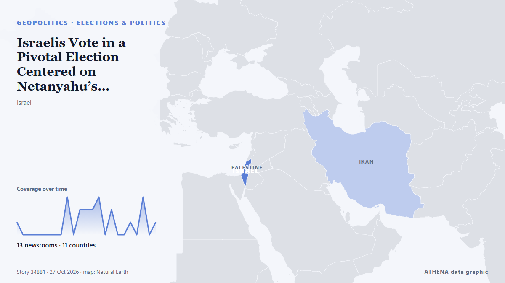

Israelis Vote in a Pivotal Election Centered on Netanyahu’s Leadership, Oct. 7 and Its Aftermath

Israelis flocked to the polls on Tuesday for the first time since Hamas's October 7, 2023 attack, with a deeply divided electorate delivering their verdict on vete. από Al-Monitor
Αναφέρθηκε ανεξάρτητα από 13 μέσα σε 11 χώρες από τις 26 Οκτ, πρώτο από το The Daily Star — page reader· η κάλυψη έχει πλέον ηρεμήσει. Το ATHENA εκτιμά τον κίνδυνο αυξημένο (4.6/10), κυρίως λόγω της σοβαρότητας της βλάβης που περιγράφεται και της γεωγραφικής και τομεακής εμβέλειάς του. Η βεβαιότητα είναι 90% (υψηλή), καθώς το επιβεβαιώνουν 13 ανεξάρτητα μέσα με μέση αξιοπιστία πηγών 77%.
Γιατί έχει σημασία: Η σελίδα παρακολουθεί τη σύγκρουση που αφορά το Ισραήλ, τη Γάζα, τη Δυτική Όχθη και τον Λίβανο — στρατιωτικές εξελίξεις, ανθρωπιστική κατάσταση και διπλωματία — όπως την καλύπτουν μέσα από όλο τον κόσμο.
Τι άλλαξε: 20 νέες αναφορές από 13 μέσα στο 24ωρο έως 27 Οκτ.
Πρώτη διατύπωση: Israel to give verdict on Netanyahu in pivotal election
Οι τίτλοι των ειδήσεων παρουσιάζονται στα αγγλικά, όπως δημοσιεύτηκαν.
Με μια ματιά
Επιλέγεται, βαθμολογείται και γράφεται από τη δημοσιευμένη μεθοδολογία του ATHENA. Κανένας συντάκτης δεν παρεμβαίνει σε μεμονωμένα γεγονότα. Πώς παράγεται ›
| 26 Oct 18:20 UTC | 1 |
|---|---|
| 26 Oct 19:20 UTC | 0 |
| 26 Oct 20:20 UTC | 0 |
| 26 Oct 21:20 UTC | 0 |
| 26 Oct 22:20 UTC | 0 |
| 26 Oct 23:20 UTC | 0 |
| 27 Oct 00:20 UTC | 0 |
| 27 Oct 01:20 UTC | 0 |
| 27 Oct 02:20 UTC | 3 |
| 27 Oct 03:20 UTC | 0 |
| 27 Oct 04:20 UTC | 2 |
| 27 Oct 05:20 UTC | 2 |
| 27 Oct 06:20 UTC | 2 |
| 27 Oct 07:20 UTC | 3 |
| 27 Oct 08:20 UTC | 0 |
| 27 Oct 09:20 UTC | 2 |
| 27 Oct 10:20 UTC | 0 |
| 27 Oct 11:20 UTC | 0 |
| 27 Oct 12:20 UTC | 1 |
| 27 Oct 13:20 UTC | 0 |
| 27 Oct 14:20 UTC | 3 |
| 27 Oct 15:20 UTC | 0 |
| 27 Oct 16:20 UTC | 1 |
| 26 Oct 18:21 UTC | 0.0 |
|---|---|
| 27 Oct 04:31 UTC | 2.7 |
| 27 Oct 05:27 UTC | 4.5 |
| 27 Oct 12:57 UTC | 6.3 |
| 27 Oct 17:07 UTC | 5.3 |
| 30 Oct 14:03 UTC | 4.6 |
| 30 Oct 14:03 UTC | 4.6 |
Γιατί αυτοί οι αριθμοί
Σημασία
Κίνδυνος
Βεβαιότητα
Η κάλυψη — ποιος το ανέφερε και πότε
ο τίτλος όπως δημοσιεύτηκε · ανοίγει το πρωτότυπο- The Daily Star — page reader · Μπανγκλαντές · BangladeshIn Brief / Deeply divided Israel goes to the polls
- Al-Monitor · Ηνωμένες Πολιτείες · United StatesIsrael to give verdict on Netanyahu in pivotal election
- Al-Monitor · Ηνωμένες Πολιτείες · United StatesTurnout high as Israeli voters deliver verdict on Netanyahu
- The Daily Star — page reader · Μπανγκλαντές · BangladeshIsrael to give verdict on Netanyahu in pivotal election
- Stuff · Νέα Ζηλανδία · New ZealandVoters in Israel will decide whether to oust Netanyahu after 3 years of war
- Dawn · Πακιστάν · PakistanIsrael to give verdict on Netanyahu in pivotal election
- The National · Ηνωμένα Αραβικά Εμιράτα · United Arab EmiratesIsraeli voters head to polling stations to deliver Netanyahu verdict
- Asharq Al-Awsat (English) · Σαουδική Αραβία · Saudi ArabiaIsraelis Vote in a Pivotal Election Centered on Netanyahu’s Leadership, Oct. 7 and Its Aftermath
- The New Arab · INTEyes on Israel elections, Iran says US 'not serious' on talks
- Kyiv Post · Ουκρανία · UkraineIsrael to Give Verdict on Netanyahu in Pivotal Election
- Channels TV · Νιγηρία · NigeriaIsrael To Give Verdict On Netanyahu As Polls Declared Open
- Fox News (World) · Ηνωμένες Πολιτείες · United StatesIsrael heads into deeply divided election as Oct 7 reckoning looms: What to know
- France 24 English · Γαλλία · France🔴 Live: Israel election deadlock leaves Netanyahu and rival Eisenkot short of majority
- France 24 English · Γαλλία · FranceIsraeli elections: voters turnout reaches '16.7%' four hours after polls open
- The Korea Times · Νότια Κορέα · South KoreaVoters in Israel are deciding whether to oust Netanyahu after 3 years of war
- France 24 English · Γαλλία · FranceTurnout high as Israeli voters deliver verdict on Netanyahu
- Jamaica Observer · Τζαμάικα · JamaicaRecord turnout as Israeli voters deliver verdict on Netanyahu
- France 24 English · Γαλλία · FranceIsrael votes in decisive election: What happens after polls close?
- France 24 English · Γαλλία · FranceIsrael elections: voter turnout reaches 55% by 4pm local time